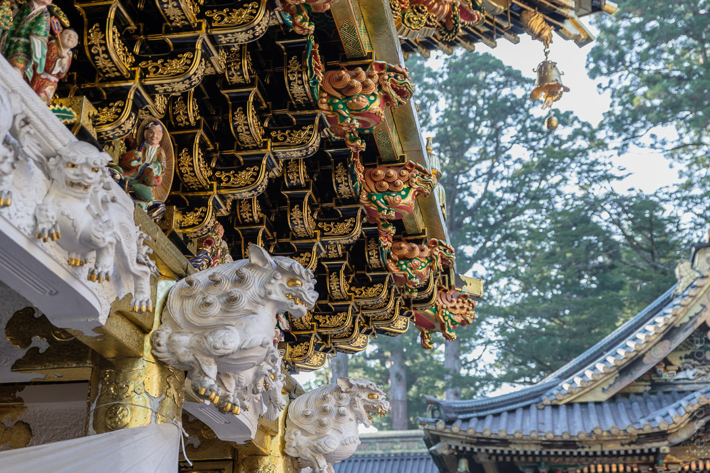
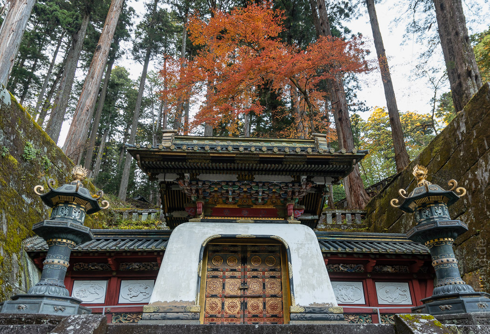

Zur Abwechslung vom Stadtleben haben wir uns aufs Land gewagt. Nikko liegt nördlich von Tokio und war die erste Gelegenheit unseren Japan Rail Pass zu nutzen. Wir mussten zwar erstmal in Tokio zu einem anderen Bahnhof fahren, was im morgendlichen Pendlerverkehr etwas beengt vonstatten ging, doch dann konnten wir im Shinkansen bequem davon schießen. Die endlosen Vorstädte sind ziemlich trist. Die niedrigen Häuser sind mit Kunststoffplatten verkleidet und haben kleine, verhangene Fenster. Das passt so gar nicht zu den eleganten Interieurs der Tokioter Geschäfte. Nach einer Weile wurde es ländlicher und waldiger. Am Bahnhof Nikko sind wir dann mitten in der Eifel ausgestiegen - nur die Busse haben kompliziertere Ansagen.
Von unserem einfachen Guesthouse Turtle Inn, das etwas abseits gelegen ist, sind wir direkt in den Wald marschiert, in dem sich die „National Treasures“ verbergen, für die Nikko berühmt ist. Wir hatten uns gewundert, wie sie an so einen Ort eine hässliche Fabrikhalle bauen können. Aber es war der erste Tempel, der für seine aufwendige Restauration in eine ziemlich große Leichtbauhalle eingebaut worden war - der Traum eines jeden Touristen. Wir konnten aber dennoch hinein und etwas vom frischen Lack bewundern. Ach, und da waren auch noch ein Trio meterhoher, goldener Buddha-Figuren.
Ein kleiner Spaziergang durch die hohen Zedern hat uns zum Togoshu Schrein gebracht. Auf dem breiten Weg tummelten sich Hundertschaften von Ausflüglern. Von außen wirkt der Hügel unscheinbar, als gäbe es außer Feuerholz und Winterdeko nicht viel zu holen. Aber weit gefehlt. Zwischen den mächtigen alten Baumstämmen ragen Pagoden und reich verzierte Tore auf. Das dunkle Holz der Dächer ist, wo es geht, mit Gold eingefasst. Hinter hohen Mauern versteckt sich eine atemberaubende Tempelanlage. In den Wäldern gibt es noch eine ganze Reihe weiterer schöner Tempel. Manche sind mit Moos bewachsen oder füllen kleine Täler mit Steinfiguren.

Der Ort selbst hat nicht besonders viel zu bieten, um es positiv auszudrücken. Allerdings gibt es einen ungeahnten Weltrekord an der Hauptstraße zu entdecken: Das weltbeste Softeis mit Pudding-Geschmack - so gut, dass wir bei einem Aufenthalt von unter 24 Stunden zu Stammgästen geworden sind. In unserer Herberge hatten wir ein Tatami-Zimmer, das nach unserer Zelle in Tokio zum Fußballspielen einlud. Die mobilen Gasbrenner, die als Heizung dienen, sind recht abenteuerlich und man sollte sie von seinem Bettzeug fern halten.
Der frühe Morgen lud zu einem Spaziergang entlang des Flusses ein, der durch ein enges Bett schießt. Am Ufer gibt es eine kilometerlange Kette von sitzenden Buddhas. Manche sind lebensgroß und haben authentische Gesichter, manchen fehlt der Kopf und manche bestehen wie Schneemänner nur aus verschieden großen Steinen. Alle haben aber ein rotes Lätzchen und eine rote Häkelmütze auf ihren bemoosten Köpfen - nicht wirklich nachvollziehbar, aber pittoresk.